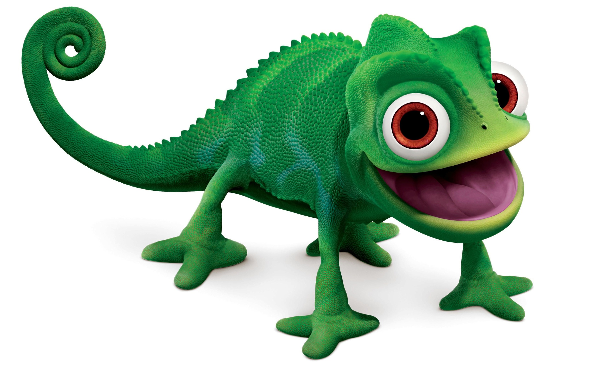

Rapunzel
Pascal
Pascal er Rapunzels beste venn og fortrolige. Bortsett fra Mother Gothel var han Rapunzels eneste venn under fengselet i tårnet. Av grunner ukjent ble hans bolig imidlertid fortrolig, da Rapunzel rådet ham til å gjemme seg når Gothel var i nærheten.
Maximus
Maximus er en palasshest opprinnelig eid av kapteinen til Corona vakt. Til tross for å tjene andre til vaktmaktens menneskelige kaptein, er Maximus ekstremt bestemt og viet til sitt arbeid. Som sin opprinnelige overlegen tok Maximus sin stilling seriøst og viste ingen sympati for de som brøt loven.
Til tross for den intense rivaliteten var denne tankegangen ikke blottet for forandring; Maximus har et mykt hjerte under hans harde eksteriør. I følge samspillet med Rapunzel føler Maximus seg unappreciated, noe som forklarer hvorfor han er litt rask til å myke sin holdning til de som viser ham medfølelse. Videre var han villig til å reformere sine synspunkter og forhold til Flynn etter å ha sett Rider endre hans veier på grunn av sin kjærlighet til Rapunzel.